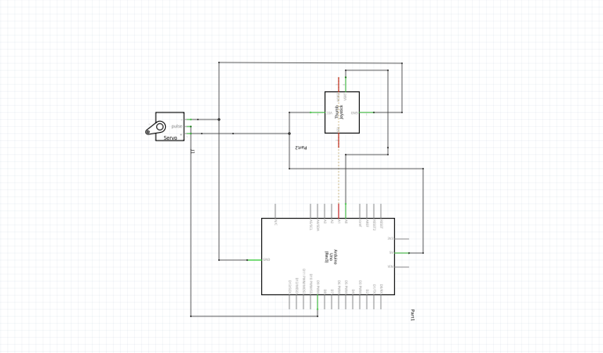
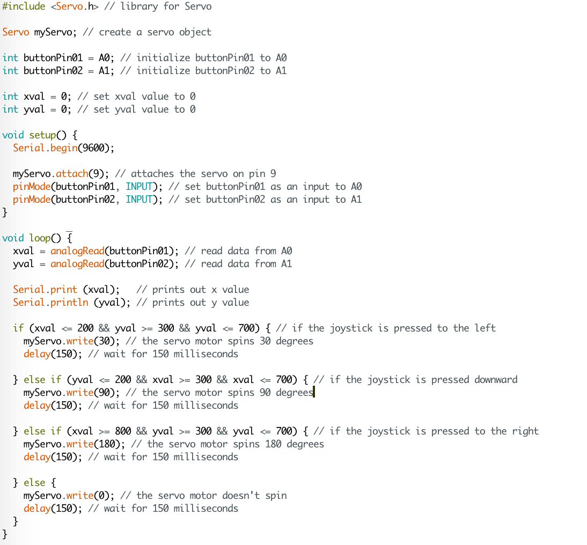
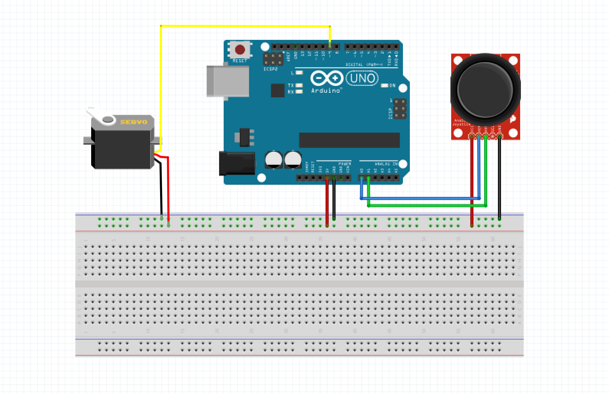

Sunny Cui's Assignment 5!

Here is all the documentation for assignment 5!

Schematic

Firmware(Codes)
From what I measured with joystick, x and y has a range from 1 to 1023.
So, I choose to use "> 511" (1023/2) to determine directions.


Circuit

Circuit's Operation